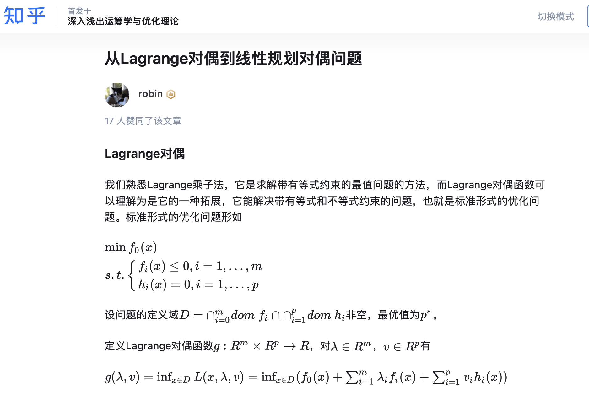

又快又准地写线性规划的对偶问题：做题向｜记忆法 ✅¶
做题向、记忆向的速成
运筹笔记更新到后面，前面有一些基础性的线性规划的东西，后台有不少同学问。然后正好开学没多久有空，就把一些去年复习线代和运筹时候的笔记再整理一下。整个笔记会以比较做题向的视角展开。主打一个技巧至上、理解至上。注意：
- 本笔记==仅包含线性规划的对偶问题，并且侧重“怎么写对偶”这个特定的问题==。不考虑凸优化理论中更加复杂的对偶推导。
- 本笔记不包含深层次的数学理论推导。因此没有公式。 但是在最后我会附上从拉格朗日对偶方法对线性规划降维打击的参考资料。
- 在阅读笔记前，你需要掌握的前置知识只有3个：
- 数学模型的三个主要部分；
- 矩阵和向量的基本概念（转置、矩阵乘法）；
- 对偶理论的入门概念；
现在我们直接开始。
初学者实际上需要解决的是：写出下面线性规划问题的对偶问题：
首先，我们需要明确一点：不论怎么写对偶，说到最后都是在解决3个要点：目标函数、决策变量、约束条件。
然后，我们进行一些前置的规定。学OR时候会发现很多不同教材上有许多不同的规定，即使是在规定“线性规划的标准形式”的时候，有的教材以最大化问题为标准形，有的是最小化目标为标准形等等，种种细节给学习对偶理论的同学带来很大困扰。
下面我们将用一种统一形式对线性规划模型进行表述。
我们把如下所示的两种形式，称作线性规划原问题的规范形式。后续我们的所有内容都会基于这两个规范形式展开。
这里的规范形式，指的是数学模型在目标函数取最大还是最小化时，约束的符号取正还是负、决策变量取正还是负号上的统一。 比如，对于一个最大化问题，当且仅当它的某个约束是 \(\leq\) 时，这个约束才是规范形式，同时，当且仅当某个约束是 \(\geq\) 约束，它才是是不规范约束。当且仅当它的某个决策变量是非负的，我们才说这个决策变量是规范的，同理类推。
同理，对于一个最小化问题，当且仅当它的某个约束是 \(\geq\) 约束，这个约束才是规范形式，同时，当且仅当某个约束是 \(\leq\) 约束，它才是不规范约束；当且仅当它的某个决策变量是非负的，我们才说这个决策变量是规范的。同理类推。
现在，回到我们要解决的问题上。我们从==第一个重点==出发：原问题的每一个约束条件，都对应对偶问题的一个决策变量。 所以，这个问题有3个约束条件，毫无疑问，对偶问题就有3个决策变量。我们先记为 \(y_1, y_2, y_3\)。写在每个原问题约束条件后面。
你可以发现，由于每一个约束条件都有一个右端项，所有右端项和对应的对偶问题决策变量的乘积之和，就是对偶问题的目标函数。而最小化问题的对偶问题目标函数是最大化，最大化问题的对偶问题目标函数是最小化。所以可以==快速写出对偶问题的目标函数==，三要素之一的目标函数 ✅：
第二个重点：对偶问题约束条件的系数矩阵，实际是原问题系数矩阵的转置。对于原问题，系数矩阵的行数等于约束条件数，原矩阵的列数等于决策变量数。转置后，列就对应对偶问题的决策变量，行就对应对偶问题的约束条件。这里就是第三个重点：对偶问题的约束条件与原问题决策变量一一对应。
我们把原矩阵的每一列和对偶变量对应相乘（正因为原矩阵行数等于对偶问题决策变量数，所以可以一一对应），也就是如下的形式：注意，原问题系数矩阵有一些元素是0，别忘记补上：
我们以第一个式子为例，\(y_1 + 2y_2 + 0y_3 = \begin{bmatrix} 1 & 2 & 0 \end{bmatrix} \begin{bmatrix} y_1 \\ y_2 \\ y_3 \end{bmatrix}\)。这里的 \(\begin{bmatrix} 1 & 2 & 0 \end{bmatrix}\) 正好就是原来矩阵的第一列，对应所有 \(x_1\) 的系数；同理，第二个式子写成 \(\begin{bmatrix} 1 & 0 & 1 \end{bmatrix} \begin{bmatrix} y_1 \\ y_2 \\ y_3 \end{bmatrix}\)，这里的 \(\begin{bmatrix} 1 & 0 & 1 \end{bmatrix}\) 恰恰就是原来矩阵第二列，对应 \(x_2\) 的系数。依次类推。我们把对偶问题的约束条件与原问题决策变量的一一对应关系，补充写在上面的式子里。
现在需要补充右端项。这里十分简单，上面我们标记了每个对偶问题的约束对应的原问题的决策变量，我们只需要把原问题的那个决策变量的目标函数中的系数抄下来就行了。比如，\(x_1, x_2, x_3, x_4\) 在原问题的目标函数中的系数，分别为 \(3, 2, -4, 1\)。用这些系数作为对应右端项，有：
现在有一个问题，我们该怎么确定每个约束的符号？
这时候就需要用到一开始提出的规范形式了。刚刚我们介绍了第三个重点：对偶问题的约束条件与原问题决策变量一一对应。所以，要决定对偶问题某个约束条件的符号，就只需看它对应的那个原问题的决策变量的规范形式。比如，我们要决定第一个式子的符号。就直接看原问题中 \(x_1\) 的规范形式。这里先说第四个重点：对偶问题约束条件的符号，依据对应的原问题决策变量的规范形式确定：如果对应原问题决策变量是规范形式，那么对偶问题的这个约束条件也是规范形式；如果对应原问题的决策变量是不规范的，那么对偶问题的这个约束条件也是不规范形式的。
什么意思？我们把原问题的决策变量复制过来：
应该还记得，一个最小化问题的决策变量的规范形式，是决策变量非负。 \(x_i \geq 0\)。这就说明，\(x_1\) 是==不规范形式==。所以，它对应的对偶问题的那个约束条件也是不规范的。而，对于对偶问题，这个最大化问题，一个约束是不规范的，这意味着其符号是 \(\geq\).
同理，\(x_2, x_3 \geq 0\)，在原问题（最小化问题）下，这两个变量都是规范形式，所以，对应的，对偶问题的两个约束条件也是规范的。而在对偶问题（最大化问题）下，一个约束是规范的，这意味着其符号是 \(\leq\)。
最后，我们遇到最后一个原问题决策变量： \(x_4\)。它是无约束的，那么，对应的约束条件就是等号。这里是第五个重点：原问题无范围约束的决策变量，对应对偶问题的等式约束。
为什么
这里很容易理解。一个原问题决策变量无范围限制，就是说明同时满足 \(x_4 \geq 0\)，\(x_4 \leq 0\)。利用我们上面的规则，也就是它对应对偶问题的那个约束，既是规范约束，又是不规范约束：
一个约束既 \(\leq 0\) 又 \(\geq 0\)，不就是说明这个约束只能取等号么。
综上所述，我们可以知道，\(x_1, x_2, x_3\)，分别是不规范、规范、规范和无约束的。对应对偶问题决策变量符号： \(\geq, \leq, \leq, =\)。所以我们就把对偶问题的约束条件彻底写好了。三要素之一的约束条件 ✅
现在，我们还剩最后一个问题。我们怎么定义对偶问题决策变量的范围呢？
你应该能感觉到，既然原问题-对偶问题存在一个“决策变量-约束条件”的对应，那对偶问题的决策变量，是不是也对应原问题的约束条件呢，事实上确实如此。先给出第六个重点：对偶问题决策变量的符号，依据对应的原问题约束条件的规范形式确定：如果对应原问题约束条件是规范形式，那么对偶问题的这个决策变量也是规范形式；如果对应原问题的约束条件是不规范的，那么对偶问题的这个决策变量也是不规范形式的。
下面是原问题的约束条件。我把每个约束对应的对偶问题决策变量列在后面。
注意：
- 第一个约束是原问题（最小化问题）的一个 \(\geq 0\) 约束，是规范形式的。所以，\(y_1\) 也必须是在对偶问题（最大化问题）下的一个规范形式。而最大化问题下决策变量符号的规范形式是 \(\geq 0\)，所以 \(y_1 \geq 0\)。类似地，
- 第二个约束是原问题（最小化问题）的一个 \(\leq 0\) 约束，是非规范形式的。所以，\(y_1\) 也必须是在对偶问题（最大化问题）下的一个非规范形式。而最大化问题下决策变量符号的规范形式是 \(\leq 0\)，所以 \(y_2 \leq 0\)。
- 第三个约束，是等式约束，那么对应的决策变量无约束。这里可以给出最后一个，第七个重点：原问题等式约束的约束条件，对应对偶问题的决策变量无约束。 则 \(y_3 \ \text{No Constr}\).三要素之一的决策变量 ✅
我们把这一路写的汇总，就是最后的答案：
大功告成！
拉格朗日对偶视角下的线性规划对偶问题¶
对于一个标准形式下的线性规划问题：
我们转化成拉格朗日函数：
\(L(x, \lambda, v) = c^T x - \lambda^T x + v^T (Ax - b) = -b^T v + (c + A^T v - \lambda)^T x\)
实际上就是把 \(x \geq 0\) 和 \(Ax = b\) 同时加到目标函数上。
其对应的拉格朗日对偶函数：
\(g(\lambda, v) = \inf_x L(x, \lambda, v) = -b v^T + \inf_x (c + A^T v - \lambda)^T x\)
非常函数的仿射函数是无界的，因此：
基于共轭函数写出对偶问题：
整理后：
推荐This Link，从更高的视角看整个线性规划的对偶。
